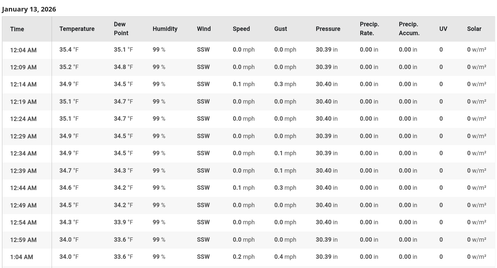
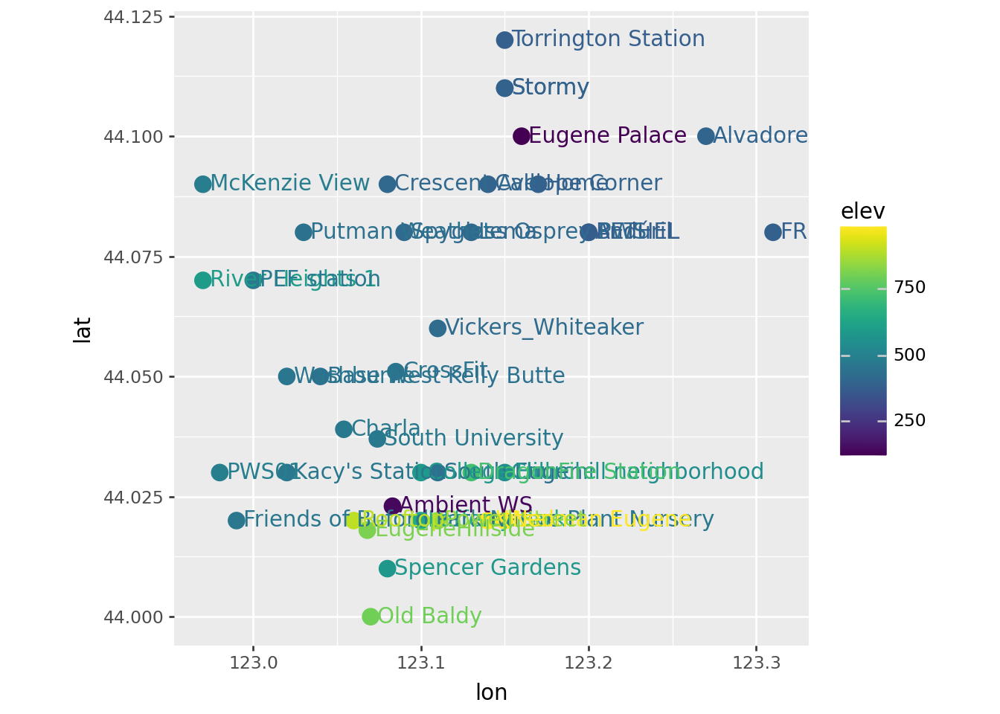

| name | code | lat | lon | elev | |
|---|---|---|---|---|---|
| 0 | BETHEL | KOREUGEN31 | 44.080 | 123.200 | 380 |
| 1 | Torrington Station | KOREUGEN67 | 44.120 | 123.150 | 377 |
| 2 | South Eugene | KOREUGEN74 | 44.030 | 123.110 | 440 |
| 3 | South University | KOREUGEN127 | 44.037 | 123.074 | 470 |
| 4 | Old Baldy | KOREUGEN225 | 44.000 | 123.070 | 800 |
| 5 | Lafferty Park | KOREUGEN226 | 44.020 | 123.100 | 640 |
| 6 | Crescent Ave | KOREUGEN249 | 44.090 | 123.080 | 410 |
| 7 | Alvadore | KOREUGEN260 | 44.100 | 123.270 | 400 |
| 8 | Lema | KOREUGEN295 | 44.080 | 123.130 | 410 |
| 9 | College Hill | KOREUGEN303 | 44.030 | 123.100 | 587 |
| 10 | Churchill neighborhood | KOREUGEN307 | 44.030 | 123.150 | 545 |
| 11 | Stormy | KOREUGEN315 | 44.110 | 123.150 | 387 |
| 12 | Vickers_Whiteaker | KOREUGEN319 | 44.060 | 123.110 | 423 |
| 13 | CrossFit | KOREUGEN321 | 44.051 | 123.085 | 454 |
| 14 | Calliope Corner | KOREUGEN343 | 44.090 | 123.140 | 394 |
| 15 | Stormy | KOREUGEN315 | 44.110 | 123.150 | 387 |
| 16 | Andúril | KOREUGEN333 | 44.080 | 123.200 | 374 |
| 17 | Friends of Buford Park Native Plant Nursery | KOREUGEN346 | 44.020 | 122.990 | 463 |
| 18 | Home | KOREUGEN357 | 44.090 | 123.170 | 384 |
| 19 | Kitselman Eugene | KOREUGEN372 | 44.020 | 123.140 | 984 |
| 20 | Spyglass Osprey PWS | KOREUGEN406 | 44.080 | 123.090 | 417 |
| 21 | Spencer Gardens | KOREUGEN411 | 44.010 | 123.080 | 581 |
| 22 | Powell Street | KOREUGEN432 | 44.020 | 123.110 | 856 |
| 23 | EugeneHillside | KOREUGEN453 | 44.018 | 123.068 | 817 |
| 24 | Ambient WS | KOREUGEN463 | 44.023 | 123.083 | 135 |
| 25 | DragonFire Station | KOREUGEN472 | 44.030 | 123.130 | 728 |
| 26 | Eugene Palace | KOREUGEN507 | 44.100 | 123.160 | 117 |
| 27 | Charla | KOREUGEN514 | 44.039 | 123.054 | 469 |
| 28 | Neo | KOREUGEN516 | 44.020 | 123.150 | 990 |
| 29 | Rooftop | KOREUGEN540 | 44.020 | 123.060 | 902 |
| 30 | River Heights 1 | KORSPRIN69 | 44.070 | 122.970 | 597 |
| 31 | Putman Weathet | KORSPRIN96 | 44.080 | 123.030 | 446 |
| 32 | PEF station | KORSPRIN138 | 44.070 | 123.000 | 472 |
| 33 | Base West Kelly Butte | KORSPRIN144 | 44.050 | 123.040 | 443 |
| 34 | Kacy's Station | KORSPRIN145 | 44.030 | 123.020 | 463 |
| 35 | PWS01 | KORSPRIN172 | 44.030 | 122.980 | 489 |
| 36 | McKenzie View | KORSPRIN176 | 44.090 | 122.970 | 483 |
| 37 | Washburne | KORSPRIN194 | 44.050 | 123.020 | 460 |
| 38 | FRS541 | KORVENET18 | 44.080 | 123.310 | 381 |
Exploring with plots: Weather Data
Peter Ralph
2026-01-13
Weather Underground
Associated with WU is a large number of Personal Weather Stations

From these, data is available:

… every five minutes:

screenshot of data from that station in an HTML table
Web scraping
Happily, someone has written a scraper:
git clone git@github.com:Karlheinzniebuhr/the-weather-scraper.git
cd the-weather-scraper
pip install lxml requests
# edit stations.txt and config.py
python weather_scraper.pyand then WAIT. (There’s 5-second timeouts between requests.)
I’ve done some for you:
- a table of local stations: stations.csv
- a zip file of data from 2025: weather_2025.zip
Let’s have a look! (unzip the file to data/)
Better would be with a map for background, but this is okay:

Each station has it’s own file:
| Date | Time | Temperature_C | Dew_Point_C | Humidity_% | Wind | Speed_kmh | Gust_kmh | Pressure_hPa | Precip_Rate_mm | Precip_Accum_mm | UV | Solar_w/m2 | code | |
|---|---|---|---|---|---|---|---|---|---|---|---|---|---|---|
| 0 | 2015/12/28 | 05:39 PM | 5.61 | 5.28 | 98 | SSW | 0.0 | 0.0 | 1013.88 | 0.0 | 0.0 | 0 | 0.0 | KOREUGEN74_2015 |
| 1 | 2015/12/28 | 05:42 PM | 5.61 | 5.5 | 99 | WSW | 0.0 | 0.0 | 1013.88 | 0.0 | 0.0 | 0 | 0.0 | KOREUGEN74_2015 |
| 2 | 2015/12/28 | 05:47 PM | 5.72 | 5.61 | 99 | West | 3.22 | 11.91 | 1013.88 | 0.0 | 0.0 | 0 | 0.0 | KOREUGEN74_2015 |
| 3 | 2015/12/28 | 05:52 PM | 5.72 | 5.61 | 99 | West | 0.0 | 0.0 | 1013.88 | 0.0 | 0.0 | 0 | 0.0 | KOREUGEN74_2015 |
| 4 | 2015/12/28 | 05:57 PM | 5.72 | 5.61 | 99 | SSE | 0.0 | 0.0 | 1013.55 | 0.0 | 0.0 | 0 | 0.0 | KOREUGEN74_2015 |
| ... | ... | ... | ... | ... | ... | ... | ... | ... | ... | ... | ... | ... | ... | ... |
| 98536 | 2025/12/31 | 11:39 PM | 2.0 | 1.78 | 99 | NNW | 0.0 | 0.0 | 1013.55 | 0.0 | 0.0 | 0 | 0.0 | KOREUGEN127_2025 |
| 98537 | 2025/12/31 | 11:44 PM | 2.0 | 1.78 | 99 | NNW | 0.32 | 0.48 | 1013.21 | 0.0 | 0.0 | 0 | 0.0 | KOREUGEN127_2025 |
| 98538 | 2025/12/31 | 11:49 PM | 2.0 | 1.78 | 99 | NNW | 0.0 | 0.0 | 1013.21 | 0.0 | 0.0 | 0 | 0.0 | KOREUGEN127_2025 |
| 98539 | 2025/12/31 | 11:54 PM | 2.11 | 1.89 | 99 | NNW | 0.0 | 0.0 | 1013.21 | 0.0 | 0.0 | 0 | 0.0 | KOREUGEN127_2025 |
| 98540 | 2025/12/31 | 11:59 PM | 2.22 | 2.0 | 99 | WNW | 0.16 | 0.32 | 1013.21 | 0.0 | 0.0 | 0 | 0.0 | KOREUGEN127_2025 |
1357156 rows × 14 columns
Goals:
What we’d like to do is understand how well rainfall in one part of Eugene/Springfield predicts rainfall in another part. In particular, how well does rainfall at one point – the National Weather Service station – predict load for the municipal stormwater system?
So: let’s understand the data, with this goal in mind.